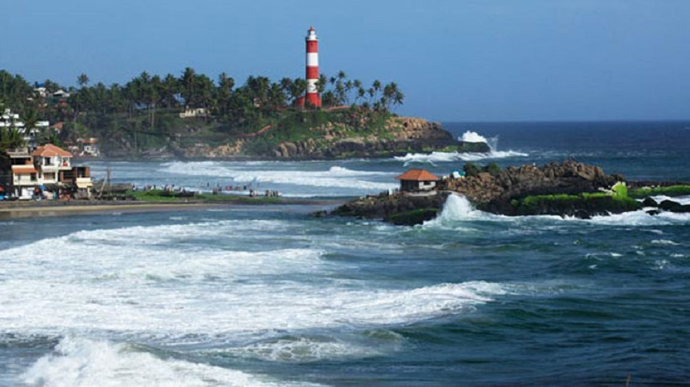

KOLLAM

Kollam, also known by its former name Quilon and Koolam (in Arabic), Coulão (in Portuguese), and Desinganadu, is an ancient seaport and city on the Malabar Coast of India bordering the Laccadive Sea, which is a part of the Arabian Sea. It is 66 km (41 mi) north of the state capital Thiruvananthapuram. The city is on the banks of Ashtamudi Lake and the Kallada river.
Kollam has a strong commercial reputation since ancient times. The Arabs, Phoenicians, Chinese, Ethiopians, Syrians, Jews, Chaldeans and Romans have all engaged in trade at the port of Kollam for millennia. As a result of Chinese trade, Kollam was mentioned by Ibn Battuta in the 14th century as one of the five Indian ports he had seen during the course of his twenty-four-year travels. Desinganadu's rajas exchanged embassies with Chinese rulers while there was a flourishing Chinese settlement at Kollam. In the ninth century, on his way to Canton, China, Persian merchant Sulaiman al-Tajir found Kollam to be the only port in India visited by huge Chinese junks. Marco Polo, the Venetian traveller, who was in Chinese service under Kublai Khan in 1275, visited Kollam and other towns on the west coast, in his capacity as a Chinese mandarin. Kollam is also home to one of the seven churches that were established by St Thomas as well as one of the 10 oldest mosques believed to be found by Malik Deenar in Kerala.
V. Nagam Aiya in his Travancore State Manual records that in 822 AD two East Syriac bishops Mar Sabor and Mar Proth, settled in Quilon with their followers. Two years later the Malabar Era began (824 AD) and Quilon became the premier city of the Malabar region ahead of Travancore and Cochin. Kollam Port was founded by Mar Sabor at Tangasseri in 825 as an alternative to reopening the inland seaport of Kore-ke-ni Kollam near Backare (Thevalakara), which was also known as Nelcynda and Tyndis to the Romans and Greeks and as Thondi to the Tamils.
Tourist Spots

Jatayu Earth's Center

Thangassery Light House

Palaruvi Falls